# 核心包
library(ggplot2)
library(dplyr)
library(tidyr)
library(patchwork)
# 聚类相关包
library(cluster) # 层次聚类、PAM
library(dbscan) # DBSCAN、OPTICS
library(mclust) # 高斯混合模型
library(kernlab) # 谱聚类
# 可视化增强
library(factoextra) # 聚类可视化
library(ggdendro) # 树状图
library(plotly) # 交互式图表
# 评估指标
library(fpc) # 聚类评估聚类分析方法大全：从 K-means 到谱聚类
系统对比六大聚类算法的原理与实践
机器学习与 AI
无监督学习
聚类分析
全面覆盖 K-means、层次聚类、DBSCAN、GMM、谱聚类等主流聚类方法，包含算法对比、参数调优和可视化实战
教程目标
聚类分析是无监督学习的核心任务，旨在发现数据的内在结构。不同的聚类算法基于不同的假设，适用于不同的数据特征。本教程将系统对比六大主流聚类方法：
核心内容
- K-means：快速、简单，适合凸形、等大小的簇
- 层次聚类：生成树状图，无需预设簇数
- DBSCAN：基于密度，能识别任意形状和噪声点
- 高斯混合模型（GMM）：软聚类，基于概率分布
- PAM（K-medoids）：对异常值更稳健的 K-means 变体
- 谱聚类：基于图论，处理非凸簇和流形结构
适用场景对比
| 算法 | 优势 | 劣势 | 适用场景 |
|---|---|---|---|
| K-means | 速度快、实现简单 | 需预设 K、对异常值敏感 | 大规模数据、球形簇 |
| 层次聚类 | 生成层次结构、无需预设 K | 计算复杂度高 O(n³) | 小数据集、需层次关系 |
| DBSCAN | 识别任意形状、自动检测噪声 | 对密度变化敏感、难调参 | 空间数据、不规则簇 |
| GMM | 软聚类、概率解释 | 对初始值敏感、计算成本高 | 重叠簇、需概率估计 |
| PAM | 对异常值稳健 | 比 K-means 慢 | 有异常值的中小数据 |
| 谱聚类 | 处理非凸簇 | 需选择相似度矩阵、计算昂贵 | 图像分割、流形数据 |
数据准备
我们构造四种典型场景的模拟数据，以展示不同算法的特性：
set.seed(2026)
# 场景1: 标准球形簇（适合 K-means）
spherical <- bind_rows(
data.frame(x = rnorm(100, 2, 0.5), y = rnorm(100, 2, 0.5), cluster = "A"),
data.frame(x = rnorm(100, -2, 0.5), y = rnorm(100, -2, 0.5), cluster = "B"),
data.frame(x = rnorm(100, 2, 0.5), y = rnorm(100, -2, 0.5), cluster = "C")
)
# 场景2: 环形簇（适合 DBSCAN、谱聚类）
theta <- runif(200, 0, 2 * pi)
annular <- bind_rows(
data.frame(
x = 3 * cos(theta[1:100]) + rnorm(100, 0, 0.2),
y = 3 * sin(theta[1:100]) + rnorm(100, 0, 0.2),
cluster = "Outer"
),
data.frame(
x = rnorm(100, 0, 0.5),
y = rnorm(100, 0, 0.5),
cluster = "Inner"
)
)
# 场景3: 不同密度簇（适合 DBSCAN）
varied_density <- bind_rows(
data.frame(x = rnorm(150, 0, 0.3), y = rnorm(150, 0, 0.3), cluster = "Dense"),
data.frame(x = rnorm(50, 4, 1.2), y = rnorm(50, 4, 1.2), cluster = "Sparse")
)
# 场景4: 椭圆形重叠簇（适合 GMM）
library(MASS)
elliptical <- bind_rows(
data.frame(mvrnorm(100, c(0, 0), matrix(c(2, 0.5, 0.5, 0.5), 2)), cluster = "E1"),
data.frame(mvrnorm(100, c(2, 1), matrix(c(0.5, 0, 0, 2), 2)), cluster = "E2")
)
names(elliptical)[1:2] <- c("x", "y")p1 <- ggplot(spherical, aes(x, y, color = cluster)) +
geom_point(alpha = 0.6) +
labs(title = "场景1: 球形簇") +
theme_minimal() +
theme(legend.position = "none")
p2 <- ggplot(annular, aes(x, y, color = cluster)) +
geom_point(alpha = 0.6) +
labs(title = "场景2: 环形簇") +
theme_minimal() +
theme(legend.position = "none")
p3 <- ggplot(varied_density, aes(x, y, color = cluster)) +
geom_point(alpha = 0.6) +
labs(title = "场景3: 不同密度") +
theme_minimal() +
theme(legend.position = "none")
p4 <- ggplot(elliptical, aes(x, y, color = cluster)) +
geom_point(alpha = 0.6) +
labs(title = "场景4: 椭圆重叠簇") +
theme_minimal() +
theme(legend.position = "none")
(p1 + p2) / (p3 + p4) +
plot_annotation(
title = "四种典型聚类场景",
subtitle = "不同算法在不同场景下的表现差异显著"
)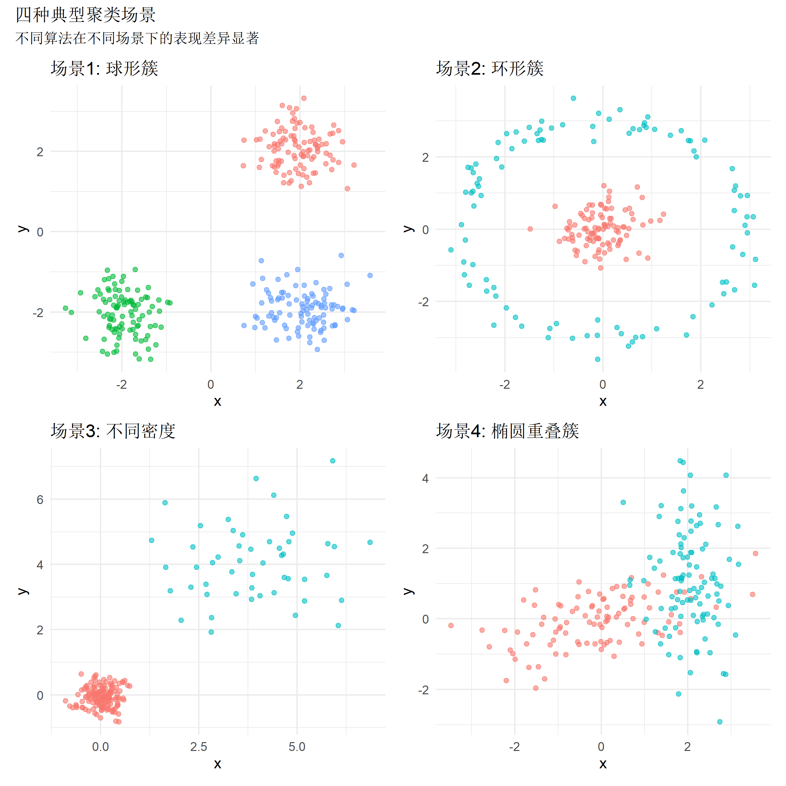
方法1：K-means 聚类
核心原理
K-means 通过迭代优化簇内平方和（WCSS）来划分数据：
- 随机初始化 K 个质心
- 将每个点分配给最近的质心
- 重新计算质心（簇内均值）
- 重复步骤 2-3 直到收敛
数学表达：最小化 \(\sum_{i=1}^{K} \sum_{x \in C_i} ||x - \mu_i||^2\)
关键超参数
centers：簇的数量 Knstart：不同初始值尝试次数（推荐 ≥ 25）iter.max：最大迭代次数algorithm：算法变体（Hartigan-Wong/Lloyd/MacQueen）
最优 K 值选择
# 计算不同 K 值的 WCSS
data_matrix <- as.matrix(spherical[, c("x", "y")])
wcss <- sapply(1:10, function(k) {
kmeans(data_matrix, centers = k, nstart = 25)$tot.withinss
})
# 肘部法则图
elbow_df <- data.frame(K = 1:10, WCSS = wcss)
ggplot(elbow_df, aes(K, WCSS)) +
geom_line(color = "#4f46e5", size = 1) +
geom_point(color = "#4f46e5", size = 3) +
geom_vline(xintercept = 3, linetype = "dashed", color = "red") +
labs(
title = "肘部法则确定最优 K 值",
subtitle = "WCSS 下降速率在 K=3 处出现拐点",
x = "簇数量 K",
y = "簇内平方和 (WCSS)"
) +
theme_minimal()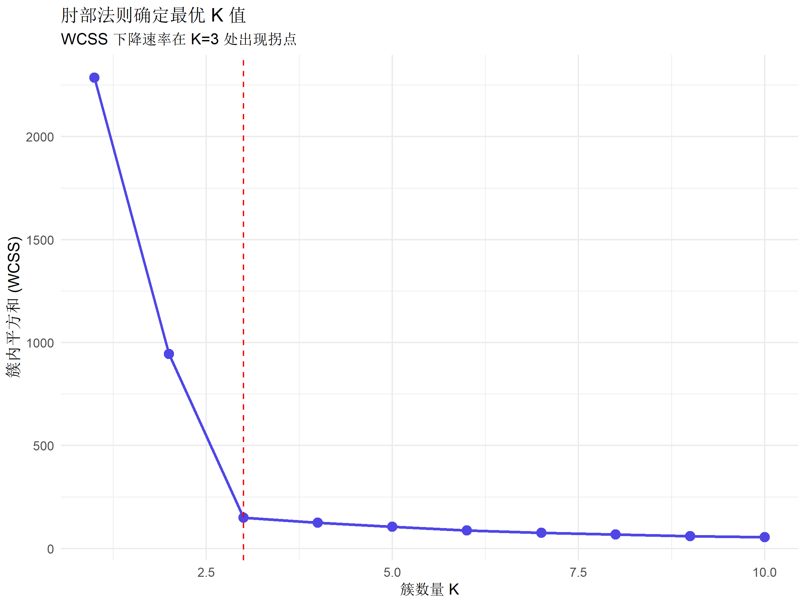
# 轮廓系数法
silhouette_scores <- sapply(2:10, function(k) {
km <- kmeans(data_matrix, centers = k, nstart = 25)
ss <- silhouette(km$cluster, dist(data_matrix))
mean(ss[, 3])
})
sil_df <- data.frame(K = 2:10, Silhouette = silhouette_scores)
ggplot(sil_df, aes(K, Silhouette)) +
geom_line(color = "#059669", size = 1) +
geom_point(color = "#059669", size = 3) +
geom_vline(xintercept = 3, linetype = "dashed", color = "red") +
labs(
title = "轮廓系数法验证",
subtitle = "平均轮廓系数在 K=3 时最大",
x = "簇数量 K",
y = "平均轮廓系数"
) +
theme_minimal()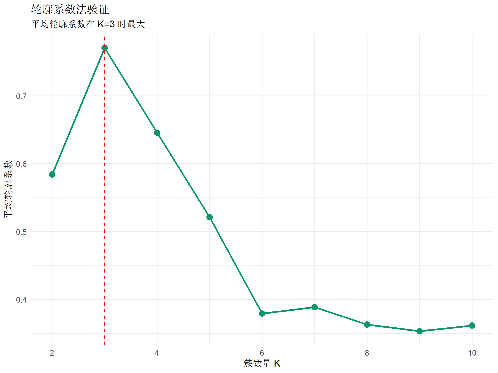
K-means 建模与可视化
# 使用最优 K=3 进行聚类
set.seed(2026)
kmeans_result <- kmeans(data_matrix, centers = 3, nstart = 25)
# 添加聚类结果
spherical$kmeans_cluster <- as.factor(kmeans_result$cluster)
# 提取质心坐标
centroids <- as.data.frame(kmeans_result$centers)
names(centroids) <- c("x", "y")
centroids$cluster <- factor(1:3)ggplot(spherical, aes(x, y)) +
geom_point(aes(color = kmeans_cluster), alpha = 0.6, size = 2) +
geom_point(
data = centroids,
aes(x, y),
color = "black",
size = 5,
shape = 8
) +
labs(
title = "K-means 聚类结果（K=3）",
subtitle = "黑色星号为质心位置",
color = "簇标签"
) +
theme_minimal() +
scale_color_brewer(palette = "Set2")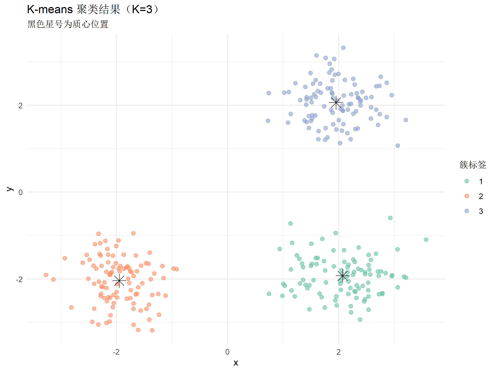
聚类质量评估
# 轮廓系数
sil <- silhouette(kmeans_result$cluster, dist(data_matrix))
avg_sil <- mean(sil[, 3])
# Dunn 指数
dunn_index <- fpc::cluster.stats(dist(data_matrix), kmeans_result$cluster)$dunn
# Davies-Bouldin 指数
db_index <- fpc::cluster.stats(dist(data_matrix), kmeans_result$cluster)$avg.silwidth
cat(sprintf("平均轮廓系数: %.3f\n", avg_sil))平均轮廓系数: 0.771cat(sprintf("Dunn 指数: %.3f\n", dunn_index))Dunn 指数: 0.540cat(sprintf("簇间分离度: %.3f\n", kmeans_result$betweenss / kmeans_result$totss))簇间分离度: 0.935fviz_silhouette(sil) +
labs(title = "K-means 轮廓系数分布") +
theme_minimal() cluster size ave.sil.width
1 1 100 0.75
2 2 100 0.79
3 3 100 0.78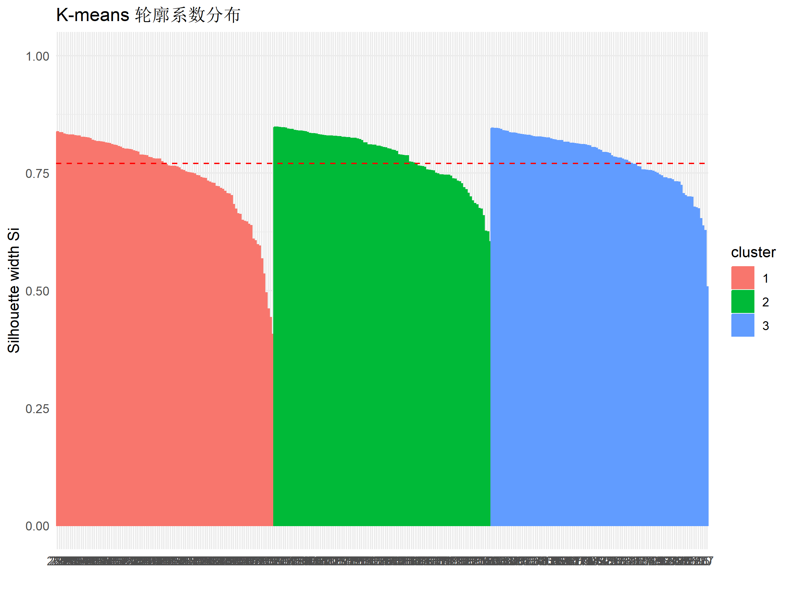
方法2：层次聚类（Hierarchical Clustering）
核心原理
层次聚类构建树状结构（dendrogram），分为：
- 凝聚型（Agglomerative）：自底向上，从每个点作为单独簇开始合并
- 分裂型（Divisive）：自顶向下，从整体数据开始分割
距离度量方法
complete：最远距离（最大直径）single：最近距离（最小直径）average：平均距离（UPGMA）ward.D2：最小化方差增量（推荐）
层次聚类实现
# 计算距离矩阵
dist_matrix <- dist(data_matrix, method = "euclidean")
# Ward 方法层次聚类
hc_ward <- hclust(dist_matrix, method = "ward.D2")
# 切割树状图得到 3 个簇
hc_clusters <- cutree(hc_ward, k = 3)
spherical$hc_cluster <- as.factor(hc_clusters)# 绘制树状图
fviz_dend(
hc_ward,
k = 3,
cex = 0.5,
k_colors = c("#E41A1C", "#377EB8", "#4DAF4A"),
color_labels_by_k = TRUE,
rect = TRUE,
main = "Ward 方法层次聚类树状图",
xlab = "样本索引",
ylab = "高度（距离）"
)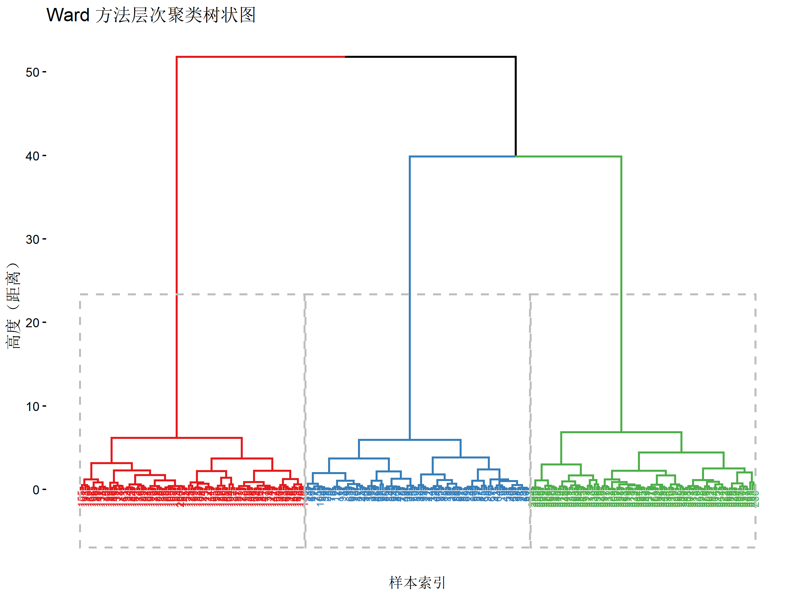
ggplot(spherical, aes(x, y)) +
geom_point(aes(color = hc_cluster), alpha = 0.6, size = 2) +
labs(
title = "层次聚类结果（Ward 方法，K=3）",
color = "簇标签"
) +
theme_minimal() +
scale_color_brewer(palette = "Set1")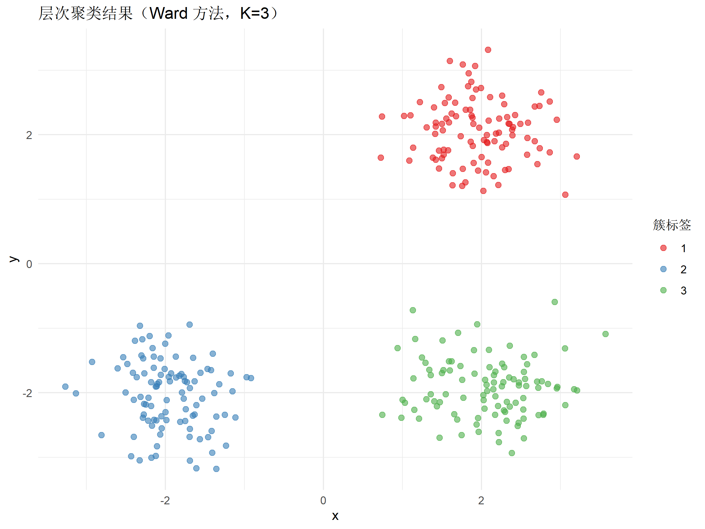
不同连接方法对比
methods <- c("single", "complete", "average", "ward.D2")
linkage_plots <- lapply(methods, function(method) {
hc <- hclust(dist_matrix, method = method)
clusters <- cutree(hc, k = 3)
plot_data <- spherical
plot_data$cluster <- as.factor(clusters)
ggplot(plot_data, aes(x, y, color = cluster)) +
geom_point(alpha = 0.6) +
labs(title = paste("连接方法:", method)) +
theme_minimal() +
theme(legend.position = "none")
})
(linkage_plots[[1]] + linkage_plots[[2]]) /
(linkage_plots[[3]] + linkage_plots[[4]]) +
plot_annotation(
title = "不同连接方法的聚类结果对比",
subtitle = "Ward 方法通常能产生更平衡的簇"
)
方法3：DBSCAN（基于密度的聚类）
核心原理
DBSCAN（Density-Based Spatial Clustering of Applications with Noise）通过密度连接识别任意形状的簇，能自动检测噪声点。
核心概念
- 核心点：ε 邻域内至少有 MinPts 个点
- 边界点：ε 邻域内点数 < MinPts，但在核心点的邻域内
- 噪声点：既非核心点也非边界点
关键超参数
eps：邻域半径 εminPts：最小点数阈值（通常设为维度 + 1）
参数选择策略
# 使用 K-NN 距离图选择 eps
annular_matrix <- as.matrix(annular[, c("x", "y")])
knn_dist <- kNNdist(annular_matrix, k = 4)
knn_dist_sorted <- sort(knn_dist)
plot_df <- data.frame(
index = 1:length(knn_dist_sorted),
distance = knn_dist_sorted
)
ggplot(plot_df, aes(index, distance)) +
geom_line(color = "#4f46e5") +
geom_hline(yintercept = 0.5, linetype = "dashed", color = "red") +
labs(
title = "K-NN 距离图（K=4）",
subtitle = "红线位置（拐点）建议 eps ≈ 0.5",
x = "点索引（按距离排序）",
y = "到第 K 个最近邻的距离"
) +
theme_minimal()
DBSCAN 聚类实现
# 在环形数据上应用 DBSCAN
set.seed(2026)
dbscan_result <- dbscan::dbscan(annular_matrix, eps = 0.5, minPts = 5)
# 添加聚类结果（0 表示噪声点）
annular$dbscan_cluster <- as.factor(dbscan_result$cluster)
# 统计簇分布
table(dbscan_result$cluster)
0 1 2 3 4 5 6 7
23 28 15 10 9 11 6 98 ggplot(annular, aes(x, y)) +
geom_point(
aes(color = dbscan_cluster, shape = dbscan_cluster == "0"),
alpha = 0.7,
size = 2
) +
scale_shape_manual(values = c(16, 4), guide = "none") +
labs(
title = "DBSCAN 聚类结果（eps=0.5, minPts=5）",
subtitle = "叉号表示噪声点，成功识别环形结构",
color = "簇标签\n(0=噪声)"
) +
theme_minimal() +
scale_color_manual(values = c("0" = "gray50", "1" = "#E41A1C", "2" = "#377EB8"))
K-means vs DBSCAN 对比
# K-means 在环形数据上的表现
kmeans_annular <- kmeans(annular_matrix, centers = 2, nstart = 25)
annular$kmeans_cluster <- as.factor(kmeans_annular$cluster)
p1 <- ggplot(annular, aes(x, y, color = kmeans_cluster)) +
geom_point(alpha = 0.6) +
labs(title = "K-means (失败案例)", subtitle = "无法识别环形结构") +
theme_minimal() +
theme(legend.position = "none")
p2 <- ggplot(annular, aes(x, y, color = dbscan_cluster)) +
geom_point(alpha = 0.6) +
labs(title = "DBSCAN (成功案例)", subtitle = "准确捕捉环形模式") +
theme_minimal() +
theme(legend.position = "none")
p1 + p2 +
plot_annotation(
title = "非凸簇场景下的算法对比",
subtitle = "DBSCAN 对形状的适应性远超 K-means"
)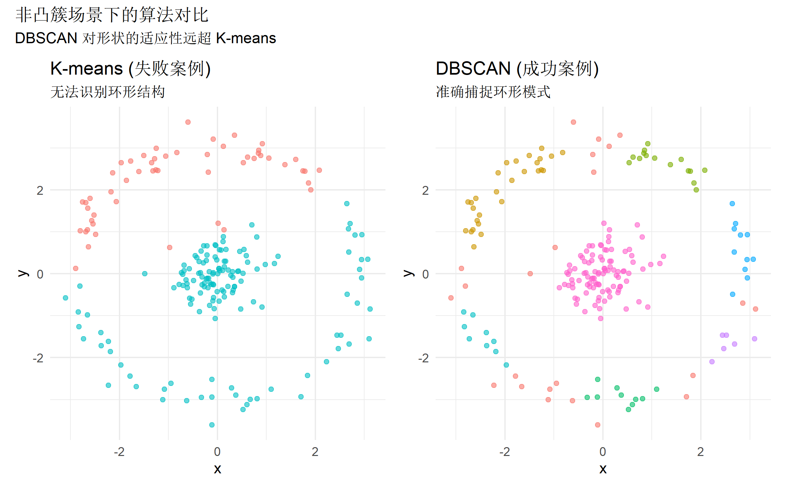
方法4：高斯混合模型（GMM）
核心原理
GMM 假设数据由多个高斯分布的混合生成，通过 EM 算法估计参数。与 K-means 的硬聚类不同，GMM 提供软聚类（概率隶属度）。
数学模型：\(p(x) = \sum_{k=1}^{K} \pi_k \mathcal{N}(x | \mu_k, \Sigma_k)\)
关键超参数
G：混合成分数量（簇数）modelNames：协方差矩阵结构（EII/VII/EEE/VVV 等）
GMM 建模与 BIC 选择
# 使用 BIC 选择最优模型
elliptical_matrix <- as.matrix(elliptical[, c("x", "y")])
gmm_models <- Mclust(elliptical_matrix, G = 1:5)
# BIC 曲线
plot(gmm_models, what = "BIC", main = "BIC 模型选择", col = "steelblue")
# 使用最优模型
gmm_result <- Mclust(elliptical_matrix, G = 2, modelNames = "VVV")
elliptical$gmm_cluster <- as.factor(gmm_result$classification)
elliptical$gmm_uncertainty <- gmm_result$uncertainty软聚类可视化
# 聚类结果（点大小表示确定性）
ggplot(elliptical, aes(x, y)) +
geom_point(
aes(color = gmm_cluster, size = 1 - gmm_uncertainty),
alpha = 0.6
) +
stat_ellipse(aes(color = gmm_cluster), type = "norm", level = 0.95) +
labs(
title = "GMM 软聚类结果（VVV 模型，G=2）",
subtitle = "椭圆表示 95% 置信区间，点大小反映聚类确定性",
color = "簇标签",
size = "确定性"
) +
theme_minimal() +
scale_color_brewer(palette = "Set1")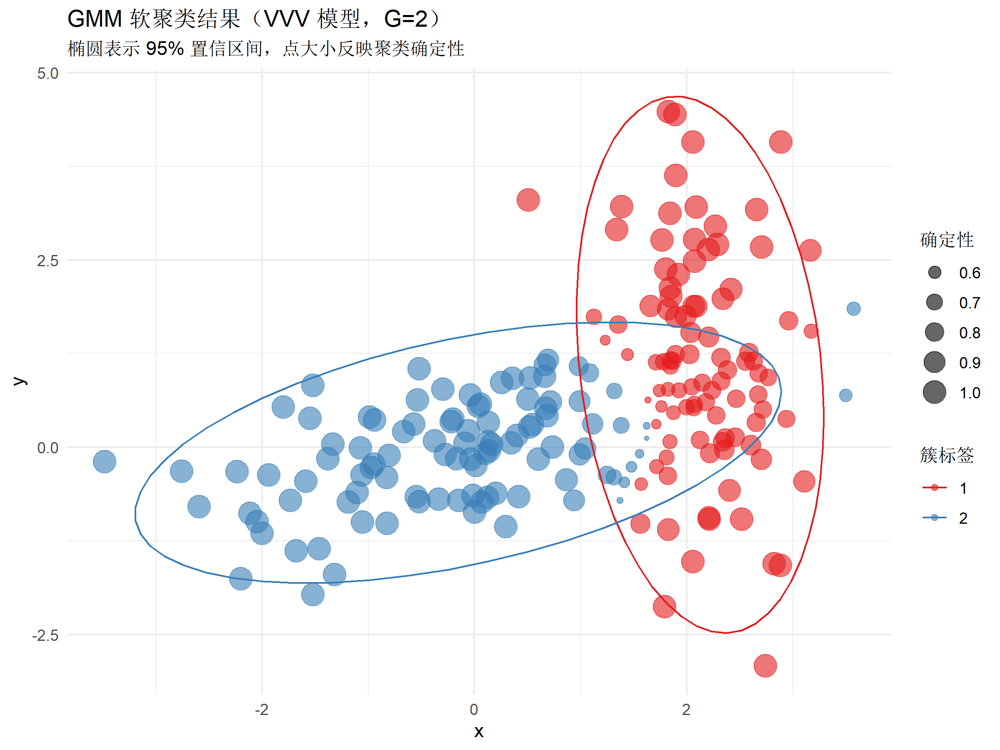
# 不确定性分布
ggplot(elliptical, aes(gmm_uncertainty, fill = gmm_cluster)) +
geom_histogram(bins = 30, alpha = 0.7, position = "identity") +
labs(
title = "GMM 聚类不确定性分布",
subtitle = "不确定性高的样本位于簇边界",
x = "不确定性",
y = "频数",
fill = "簇标签"
) +
theme_minimal() +
scale_fill_brewer(palette = "Set1")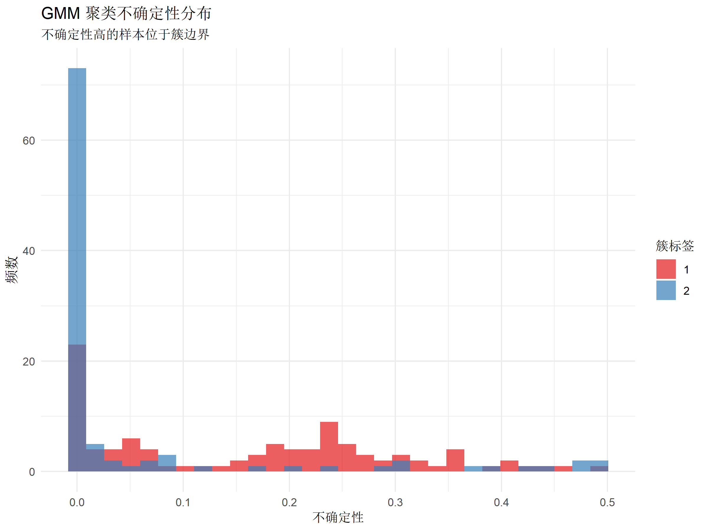
GMM 参数解释
# 提取模型参数
cat("混合比例 (π):\n")混合比例 (π):print(gmm_result$parameters$pro)[1] 0.4448199 0.5551801cat("\n均值向量 (μ):\n")
均值向量 (μ):print(gmm_result$parameters$mean) [,1] [,2]
x 2.106239 0.06885799
y 1.112055 0.02760519cat("\n协方差矩阵 (Σ):\n")
协方差矩阵 (Σ):print(gmm_result$parameters$variance$sigma), , 1
x y
x 0.2584041 -0.1050057
y -0.1050057 2.2692150
, , 2
x y
x 1.8281681 0.5510653
y 0.5510653 0.5536149方法5：PAM（K-medoids）
核心原理
PAM（Partitioning Around Medoids）是 K-means 的稳健版本，使用实际数据点（medoids）而非质心作为簇中心，对异常值更鲁棒。
与 K-means 的区别
| 特性 | K-means | PAM |
|---|---|---|
| 簇中心 | 质心（均值） | Medoid（实际点） |
| 对异常值 | 敏感 | 稳健 |
| 距离度量 | 仅欧氏距离 | 任意距离 |
| 计算复杂度 | O(nk) | O(n²) |
添加异常值验证稳健性
# 在球形数据中添加异常值
spherical_outlier <- spherical
outliers <- data.frame(
x = c(8, -8, 8),
y = c(8, -8, -8),
cluster = "Outlier",
kmeans_cluster = NA,
hc_cluster = NA
)
spherical_outlier <- bind_rows(spherical_outlier[, 1:3], outliers)
outlier_matrix <- as.matrix(spherical_outlier[, c("x", "y")])# K-means 与 PAM 对比
set.seed(2026)
kmeans_outlier <- kmeans(outlier_matrix, centers = 3, nstart = 25)
pam_outlier <- pam(outlier_matrix, k = 3)
spherical_outlier$kmeans <- as.factor(kmeans_outlier$cluster)
spherical_outlier$pam <- as.factor(pam_outlier$clustering)p1 <- ggplot(spherical_outlier, aes(x, y, color = kmeans)) +
geom_point(alpha = 0.6, size = 2) +
labs(title = "K-means（受异常值影响）") +
theme_minimal() +
theme(legend.position = "none")
p2 <- ggplot(spherical_outlier, aes(x, y, color = pam)) +
geom_point(alpha = 0.6, size = 2) +
labs(title = "PAM（稳健聚类）") +
theme_minimal() +
theme(legend.position = "none")
p1 + p2 +
plot_annotation(
title = "异常值场景下的算法稳健性对比",
subtitle = "PAM 使用 medoids 而非质心，受异常值影响更小"
)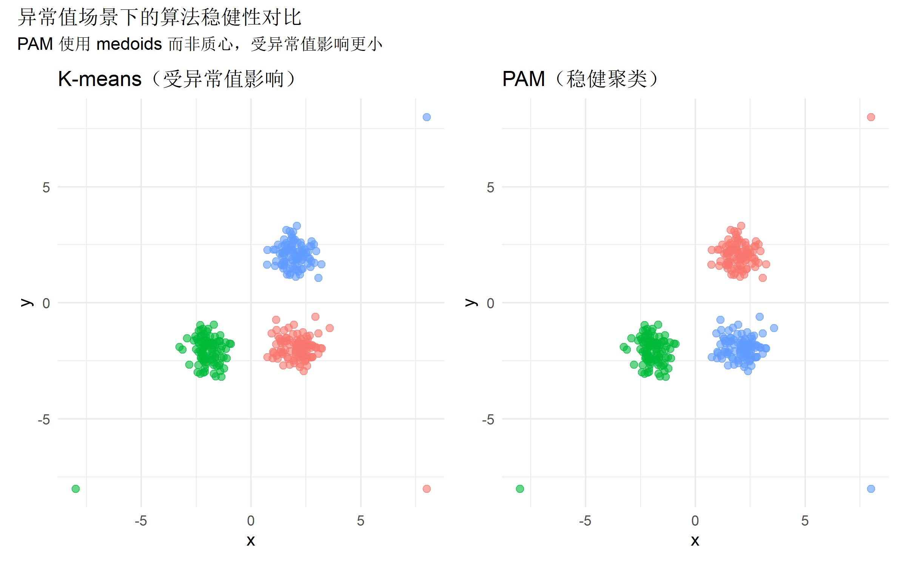
PAM 轮廓系数分析
# PAM 内置轮廓分析
pam_result <- pam(data_matrix, k = 3)
fviz_silhouette(pam_result) +
labs(title = "PAM 轮廓系数分布") +
theme_minimal() cluster size ave.sil.width
1 1 100 0.78
2 2 100 0.79
3 3 100 0.75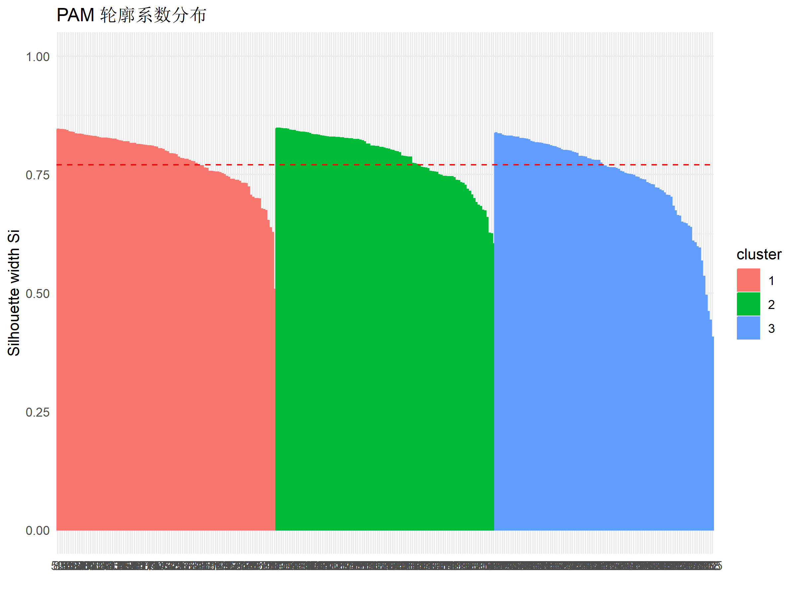
方法6：谱聚类（Spectral Clustering）
核心原理
谱聚类通过图论方法处理聚类问题：
- 构建相似度矩阵 W（通常用高斯核）
- 计算拉普拉斯矩阵 L
- 求解 L 的特征向量
- 在特征空间中应用 K-means
适用场景：非凸簇、流形数据、图像分割
谱聚类实现
# 在环形数据上应用谱聚类
set.seed(2026)
spec_result <- specc(annular_matrix, centers = 2)
annular$spectral_cluster <- as.factor(spec_result)ggplot(annular, aes(x, y, color = spectral_cluster)) +
geom_point(alpha = 0.7, size = 2) +
labs(
title = "谱聚类结果（环形数据）",
subtitle = "成功识别非凸结构",
color = "簇标签"
) +
theme_minimal() +
scale_color_brewer(palette = "Dark2")
三种方法对比（环形数据）
p1 <- ggplot(annular, aes(x, y, color = kmeans_cluster)) +
geom_point(alpha = 0.6) +
labs(title = "K-means") +
theme_minimal() +
theme(legend.position = "none")
p2 <- ggplot(annular, aes(x, y, color = dbscan_cluster)) +
geom_point(alpha = 0.6) +
labs(title = "DBSCAN") +
theme_minimal() +
theme(legend.position = "none")
p3 <- ggplot(annular, aes(x, y, color = spectral_cluster)) +
geom_point(alpha = 0.6) +
labs(title = "谱聚类") +
theme_minimal() +
theme(legend.position = "none")
p1 + p2 + p3 +
plot_annotation(
title = "非凸簇场景下三种算法的表现对比",
subtitle = "DBSCAN 和谱聚类均能正确识别环形结构"
)
聚类评估指标
内部指标（无需真实标签）
# 计算多个算法的内部指标
algorithms <- list(
"K-means" = kmeans_result$cluster,
"层次聚类" = hc_clusters,
"PAM" = pam_result$clustering
)
metrics_df <- data.frame(
算法 = names(algorithms),
轮廓系数 = sapply(algorithms, function(cl) {
mean(silhouette(cl, dist(data_matrix))[, 3])
}),
Dunn指数 = sapply(algorithms, function(cl) {
fpc::cluster.stats(dist(data_matrix), cl)$dunn
}),
连通性 = sapply(algorithms, function(cl) {
fpc::cluster.stats(dist(data_matrix), cl)$wb.ratio
})
)
knitr::kable(
metrics_df,
digits = 3,
caption = "不同算法的内部评估指标对比",
align = "lccc"
)| 算法 | 轮廓系数 | Dunn指数 | 连通性 | |
|---|---|---|---|---|
| K-means | K-means | 0.771 | 0.54 | 0.193 |
| 层次聚类 | 层次聚类 | 0.771 | 0.54 | 0.193 |
| PAM | PAM | 0.771 | 0.54 | 0.193 |
外部指标（有真实标签时）
# 模拟真实标签（使用原始 cluster 列）
true_labels <- as.numeric(factor(spherical$cluster))
# 计算调整兰德指数（使用 fpc 包内置函数）
external_metrics <- data.frame(
算法 = names(algorithms),
调整兰德指数 = sapply(algorithms, function(cl) {
fpc::cluster.stats(dist(data_matrix), cl, true_labels)$corrected.rand
})
)
knitr::kable(
external_metrics,
digits = 3,
caption = "有监督评估指标对比（需要真实标签）",
align = "lc"
)| 算法 | 调整兰德指数 | |
|---|---|---|
| K-means | K-means | 1 |
| 层次聚类 | 层次聚类 | 1 |
| PAM | PAM | 1 |
算法选择决策树
聚类算法选择的系统化流程可以帮助快速定位最合适的方法。以下是基于数据特征和需求的决策树：
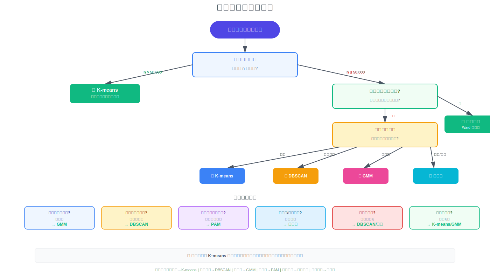
决策流程说明
- 数据规模判断
- 大规模（n > 10,000）→ K-means / Mini-batch K-means
- 中小规模（n < 10,000）→ 继续考察其他特征
- 是否需要层次结构？
- 需要 → 层次聚类（Ward 方法）
- 不需要 → 继续第3步
- 簇的形状特征
- 球形且大小相近 → K-means
- 任意形状 → DBSCAN / 谱聚类
- 椭圆形 → GMM
- 未知 → 多种方法对比
- 特殊需求
- 需要概率隶属度 → GMM
- 需要检测噪声点 → DBSCAN
- 对异常值要求稳健 → PAM
- 图数据/流形结构 → 谱聚类
- 是否已知簇数量 K？
- 已知 → 直接使用
- 未知 → 肘部法则 / 轮廓系数 / BIC
推荐决策优先级：
├─ 数据量 > 50,000 → K-means (速度优先)
├─ 存在噪声/异常值 → DBSCAN 或 PAM
├─ 簇形状复杂 → DBSCAN / 谱聚类
├─ 需要概率解释 → GMM
├─ 需要层次关系 → 层次聚类
└─ 通用场景 → K-means (基线) + 其他方法验证实战建议与最佳实践
数据预处理清单
聚类算法对数据质量极为敏感，以下是必要的预处理步骤：
# 1. 缺失值处理
data_clean <- na.omit(raw_data) # 删除法
# 或使用插补
library(mice)
data_imputed <- complete(mice(raw_data, m = 5, method = "pmm"))
# 2. 标准化（K-means/层次聚类/谱聚类必需）
data_scaled <- scale(data_clean)
# 3. 异常值检测（可选）
# 方法1：箱线图法
outliers <- boxplot.stats(data_clean$variable)$out
data_filtered <- data_clean[!data_clean$variable %in% outliers, ]
# 方法2：Mahalanobis距离
mahal_dist <- mahalanobis(data_clean, colMeans(data_clean), cov(data_clean))
threshold <- qchisq(0.975, df = ncol(data_clean))
data_filtered <- data_clean[mahal_dist <= threshold, ]
# 4. 降维（高维数据可选）
pca_result <- prcomp(data_scaled, scale. = TRUE)
# 保留解释 95% 方差的成分
cum_var <- cumsum(pca_result$sdev^2 / sum(pca_result$sdev^2))
n_components <- which(cum_var >= 0.95)[1]
data_reduced <- pca_result$x[, 1:n_components]参数调优策略
K-means / PAM
# K 值选择：肘部法则 + 轮廓系数双验证
wcss <- sapply(2:10, function(k) {
kmeans(data, centers = k, nstart = 25)$tot.withinss
})
sil <- sapply(2:10, function(k) {
km <- kmeans(data, centers = k, nstart = 25)
mean(silhouette(km$cluster, dist(data))[, 3])
})
optimal_k <- which.max(sil) + 1 # 从k=2开始
# nstart：设为 25-50 避免局部最优
final_model <- kmeans(data, centers = optimal_k, nstart = 50)DBSCAN
# eps 选择：K-NN 距离图
knn_dist <- kNNdist(data, k = 4)
plot(sort(knn_dist), type = "l")
# 手动识别拐点或使用自动检测
eps_optimal <- 0.5 # 根据拐点调整
# minPts：通常设为维度 d + 1
minPts <- ncol(data) + 1
db_result <- dbscan(data, eps = eps_optimal, minPts = minPts)GMM
# 使用 BIC 选择成分数和协方差结构
bic_grid <- mclustBIC(data, G = 1:9)
optimal_model <- summary(bic_grid)
gmm_final <- Mclust(data, x = bic_grid)常见问题与解决方案
| 问题 | 可能原因 | 解决方案 |
|---|---|---|
| 聚类结果不稳定 | K-means 初始值随机 | 增大 nstart 或固定种子 |
| 所有点归为一簇 | DBSCAN 的 eps 过大 | 减小 eps 或增大 minPts |
| 簇大小极不平衡 | 使用了 single linkage | 改用 Ward 或 average 方法 |
| 层次聚类内存溢出 | 数据量过大（n > 5000） | 先随机采样或改用 K-means |
| GMM 不收敛 | 初始值不佳 | 用 K-means 结果初始化 |
| DBSCAN 全部为噪声 | eps 过小 | 增大 eps 参数 |
| 轮廓系数为负 | 聚类质量差 | 重新选择 K 或更换算法 |
综合案例：真实数据应用
使用 iris 数据集
# 准备数据
iris_features <- iris[, 1:4]
iris_scaled <- scale(iris_features)
true_species <- iris$Species
# 应用四种算法
set.seed(2026)
iris_kmeans <- kmeans(iris_scaled, centers = 3, nstart = 25)
iris_hc <- cutree(hclust(dist(iris_scaled), method = "ward.D2"), k = 3)
iris_pam <- pam(iris_scaled, k = 3)$clustering
iris_gmm <- Mclust(iris_scaled, G = 3)$classification
# 计算调整兰德指数（使用 fpc 包）
true_labels_iris <- as.numeric(true_species)
ari_scores <- c(
"K-means" = fpc::cluster.stats(dist(iris_scaled), iris_kmeans$cluster, true_labels_iris)$corrected.rand,
"层次聚类" = fpc::cluster.stats(dist(iris_scaled), iris_hc, true_labels_iris)$corrected.rand,
"PAM" = fpc::cluster.stats(dist(iris_scaled), iris_pam, true_labels_iris)$corrected.rand,
"GMM" = fpc::cluster.stats(dist(iris_scaled), iris_gmm, true_labels_iris)$corrected.rand
)
ari_df <- data.frame(
算法 = names(ari_scores),
ARI = ari_scores
)
ggplot(ari_df, aes(reorder(算法, ARI), ARI)) +
geom_col(fill = "#4f46e5", alpha = 0.8) +
geom_text(aes(label = sprintf("%.3f", ARI)), vjust = -0.5) +
coord_flip() +
labs(
title = "Iris 数据集聚类性能对比",
subtitle = "调整兰德指数（ARI）越接近 1 表示与真实标签越一致",
x = "算法",
y = "调整兰德指数 (ARI)"
) +
theme_minimal() +
ylim(0, 1)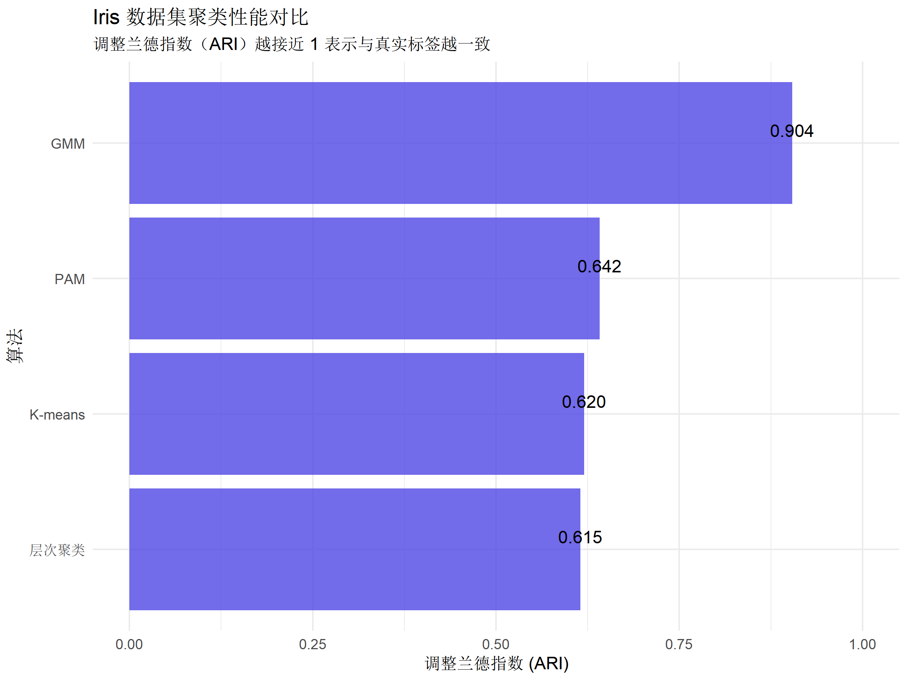
PCA 可视化对比
# PCA 降维到 2D
pca <- prcomp(iris_scaled)
pca_coords <- as.data.frame(pca$x[, 1:2])
pca_coords$真实标签 <- true_species
pca_coords$Kmeans <- as.factor(iris_kmeans$cluster)
pca_coords$层次聚类 <- as.factor(iris_hc)
pca_coords$GMM <- as.factor(iris_gmm)
p1 <- ggplot(pca_coords, aes(PC1, PC2, color = 真实标签)) +
geom_point(alpha = 0.7, size = 2) +
labs(title = "真实标签") +
theme_minimal() +
theme(legend.position = "bottom")
p2 <- ggplot(pca_coords, aes(PC1, PC2, color = Kmeans)) +
geom_point(alpha = 0.7, size = 2) +
labs(title = "K-means 聚类") +
theme_minimal() +
theme(legend.position = "bottom")
p3 <- ggplot(pca_coords, aes(PC1, PC2, color = 层次聚类)) +
geom_point(alpha = 0.7, size = 2) +
labs(title = "层次聚类") +
theme_minimal() +
theme(legend.position = "bottom")
p4 <- ggplot(pca_coords, aes(PC1, PC2, color = GMM)) +
geom_point(alpha = 0.7, size = 2) +
labs(title = "GMM 聚类") +
theme_minimal() +
theme(legend.position = "bottom")
(p1 + p2) / (p3 + p4) +
plot_annotation(
title = "Iris 数据集聚类结果的 PCA 可视化对比",
subtitle = "前两个主成分解释了 95.8% 的方差"
)

图示说明：上图总结了六种算法在簇形状适应性、计算复杂度、参数敏感性、异常值稳健性等维度的对比。
总结与推荐
算法选择速查表
| 首选场景 | 推荐算法 | 备选方案 |
|---|---|---|
| 大规模数据（n > 50,000） | K-means | Mini-batch K-means |
| 需要层次结构 | 层次聚类（Ward） | BIRCH |
| 任意形状的簇 | DBSCAN | 谱聚类 |
| 噪声点检测 | DBSCAN | OPTICS |
| 概率聚类 / 软分配 | GMM | 模糊 C-means |
| 异常值稳健性 | PAM | DBSCAN |
| 图像分割 | 谱聚类 | GMM |
| 不知道簇数量 | 层次聚类 + 树状图 | DBSCAN（自动） |
| 椭圆形簇 | GMM | K-means |
| 快速原型验证 | K-means | - |
关键要点
- 没有万能算法：选择算法需结合数据特征和业务需求
- 预处理至关重要：标准化、异常值处理直接影响结果质量
- 参数调优必不可少：使用系统方法（肘部法则、BIC 等）而非猜测
- 多指标综合评估：轮廓系数、Dunn 指数、ARI 等互相验证
- 可视化辅助理解：PCA 降维、树状图、轮廓图帮助诊断问题
- 迭代优化流程：先快速原型（K-means），再精细调优（GMM/谱聚类）
工作流程建议
# 第1步：探索性聚类（快速原型）
kmeans_baseline <- kmeans(data_scaled, centers = 3, nstart = 25)
# 第2步：评估基线性能
sil_baseline <- mean(silhouette(kmeans_baseline$cluster, dist(data_scaled))[, 3])
# 第3步：根据数据特征尝试其他算法
if (存在噪声点) {
dbscan_result <- dbscan(data_scaled, eps = 0.5, minPts = 5)
}
if (簇形状不规则) {
spec_result <- specc(data_scaled, centers = 3)
}
if (需要概率解释) {
gmm_result <- Mclust(data_scaled, G = 3)
}
# 第4步：对比多种方法
# 第5步：选择最优模型并验证稳健性进阶学习资源
理论深入
- 《Pattern Recognition and Machine Learning》（Bishop）第9章
- 《The Elements of Statistical Learning》（Hastie）第14章
R 实践
cluster包官方文档：CRANfactoextra可视化教程：STHDAdbscan包详解：arXiv:1903.05503
前沿方法
- HDBSCAN：层次密度聚类
- Affinity Propagation：基于消息传递
- Mean Shift：基于核密度估计
- Spectral Co-clustering：双向聚类
附录：完整代码清单
# ===========================================
# 聚类分析完整流程示例
# ===========================================
library(cluster)
library(factoextra)
library(dbscan)
library(mclust)
# 1. 数据加载与预处理
data <- read.csv("your_data.csv")
data_clean <- na.omit(data)
data_scaled <- scale(data_clean)
# 2. K-means 聚类
set.seed(2026)
km_result <- kmeans(data_scaled, centers = 3, nstart = 50)
# 3. 层次聚类
hc_result <- hclust(dist(data_scaled), method = "ward.D2")
hc_clusters <- cutree(hc_result, k = 3)
# 4. DBSCAN 聚类
db_result <- dbscan(data_scaled, eps = 0.5, minPts = 5)
# 5. GMM 聚类
gmm_result <- Mclust(data_scaled, G = 3)
# 6. 评估对比
sil_km <- mean(silhouette(km_result$cluster, dist(data_scaled))[, 3])
sil_hc <- mean(silhouette(hc_clusters, dist(data_scaled))[, 3])
cat(sprintf("K-means 轮廓系数: %.3f\n", sil_km))
cat(sprintf("层次聚类轮廓系数: %.3f\n", sil_hc))
# 7. 可视化
fviz_cluster(km_result, data = data_scaled, main = "K-means 聚类")
fviz_dend(hc_result, k = 3, main = "层次聚类树状图")会话信息
sessionInfo()R version 4.5.2 (2025-10-31 ucrt)
Platform: x86_64-w64-mingw32/x64
Running under: Windows 11 x64 (build 26200)
Matrix products: default
LAPACK version 3.12.1
locale:
[1] LC_COLLATE=Chinese (Simplified)_China.utf8
[2] LC_CTYPE=Chinese (Simplified)_China.utf8
[3] LC_MONETARY=Chinese (Simplified)_China.utf8
[4] LC_NUMERIC=C
[5] LC_TIME=Chinese (Simplified)_China.utf8
time zone: Asia/Shanghai
tzcode source: internal
attached base packages:
[1] stats graphics grDevices utils datasets methods base
other attached packages:
[1] MASS_7.3-65 fpc_2.2-13 plotly_4.11.0 ggdendro_0.2.0
[5] factoextra_1.0.7 kernlab_0.9-33 mclust_6.1.2 dbscan_1.2.4
[9] cluster_2.1.8.1 patchwork_1.3.2 tidyr_1.3.2 dplyr_1.1.4
[13] ggplot2_4.0.1
loaded via a namespace (and not attached):
[1] gtable_0.3.6 xfun_0.55 htmlwidgets_1.6.4 ggrepel_0.9.6
[5] rstatix_0.7.3 lattice_0.22-7 vctrs_0.6.5 tools_4.5.2
[9] generics_0.1.4 stats4_4.5.2 flexmix_2.3-20 parallel_4.5.2
[13] tibble_3.3.0 DEoptimR_1.1-4 pkgconfig_2.0.3 data.table_1.18.0
[17] RColorBrewer_1.1-3 S7_0.2.1 lifecycle_1.0.5 compiler_4.5.2
[21] farver_2.1.2 carData_3.0-5 htmltools_0.5.9 class_7.3-23
[25] yaml_2.3.12 lazyeval_0.2.2 Formula_1.2-5 pillar_1.11.1
[29] car_3.1-3 ggpubr_0.6.2 prabclus_2.3-4 diptest_0.77-2
[33] viridis_0.6.5 abind_1.4-8 robustbase_0.99-6 tidyselect_1.2.1
[37] digest_0.6.39 purrr_1.2.0 labeling_0.4.3 fastmap_1.2.0
[41] grid_4.5.2 cli_3.6.5 magrittr_2.0.4 broom_1.0.11
[45] withr_3.0.2 scales_1.4.0 backports_1.5.0 rmarkdown_2.30
[49] httr_1.4.7 otel_0.2.0 nnet_7.3-20 gridExtra_2.3
[53] ggsignif_0.6.4 modeltools_0.2-24 evaluate_1.0.5 knitr_1.51
[57] viridisLite_0.4.2 rlang_1.1.6 Rcpp_1.1.0 dendextend_1.19.1
[61] glue_1.8.0 jsonlite_2.0.0 R6_2.6.1 相关教程推荐
- K-means 聚类完整教程 - 深入解析 K-means 算法
- 降维方法（PCA/UMAP/t-SNE） - 聚类前的降维处理
- 无监督异常检测 - 聚类应用之一
- mlr3 机器学习框架 - 系统化的机器学习工作流